News
Landscaping Las Vegas
landscape designers Las Vegas
Landscaping Services inLas Vegas
Las Vegas landscaping
More
landscape design Las Vegas
xeriscape Las Vegas
landscaping companies Las Vegas
Las Vegas landscape contractors
desert landscaping Las Vegas
backyard landscaping Las Vegas
front yard landscaping Las Vegas
landscape installation Las Vegas
landscape maintenance Las Vegas
Landscaping Las Vegas Nevada
Las Vegas garden design
outdoor living Las Vegas
patio design Las Vegas
pool landscaping Las Vegas
artificial grass Las Vegas
pavers Las Vegas
retaining walls Las Vegas
irrigation systems Las Vegas
landscape lighting Las Vegas
Las Vegas landscape architecture
landscape renovation Las Vegas
residential landscaping Las Vegas
commercial landscaping Las Vegas
landscape services Las Vegas
landscape construction Las Vegas
landscape planning Las Vegas
landscape features Las Vegas
landscape elements Las Vegas
landscape materials Las Vegas
landscape plants Las Vegas
drought tolerant landscaping Las Vegas
sustainable landscaping Las Vegas
eco-friendly landscaping Las Vegas
low water landscaping Las Vegas
rock landscaping Las Vegas
gravel landscaping Las Vegas
desert plants Las Vegas
cactus garden Las Vegas
succulent garden Las Vegas
outdoor kitchen Las Vegas
fire pit Las Vegas
water features Las Vegas
landscape edging Las Vegas
landscape curbing Las Vegas
landscape drainage Las Vegas
landscape grading Las Vegas
landscape soil Las Vegas
landscape mulch Las Vegas
landscape rocks Las Vegas
landscape boulders Las Vegas
landscape trees Las Vegas
landscape shrubs Las Vegas
landscape flowers Las Vegas
landscape turf Las Vegas
landscape lawn care Las Vegas
landscape pest control Las Vegas
landscape fertilization Las Vegas
landscape trimming Las Vegas
landscape pruning Las Vegas
landscape clean up Las Vegas
landscape debris removal Las Vegas
landscape design ideas Las Vegas
landscape inspiration Las Vegas
landscape gallery Las Vegas
landscape portfolio Las Vegas
landscape estimates Las Vegas
landscape quotes Las Vegas
landscape pricing Las Vegas
landscape cost Las Vegas
landscape budget Las Vegas
landscape project Las Vegas
landscape development Las Vegas
landscape improvement Las Vegas
landscape enhancement Las Vegas
landscape transformation Las Vegas
landscape makeover Las Vegas
landscape upgrade Las Vegas
landscape solutions Las Vegas
landscape challenges Las Vegas
landscape advice Las Vegas
landscape consultation Las Vegas
landscape expert Las Vegas
landscape specialist Las Vegas
landscape professionals Las Vegas
landscape team Las Vegas
landscape crew Las Vegas
landscape equipment Las Vegas
landscape tools Las Vegas
landscape supplies Las Vegas
landscape permits Las Vegas
landscape regulations Las Vegas
landscape codes Las Vegas
About Us
Contact Us
SEO Sydney
Landscaping Las Vegas
Water Authority Rebates Spark New Las Vegas Landscaping Innovations
In an effort to curb water waste, local water authorities in Las Vegas have rolled out rebate programs rewarding homeowners who replace high-water lawns with more efficient landscapes. This policy shift has triggered a wave of landscaping innovations, spurring creativity as residents swap turf for drought-resistant shrubs, synthetic grass, and striking desert accents.
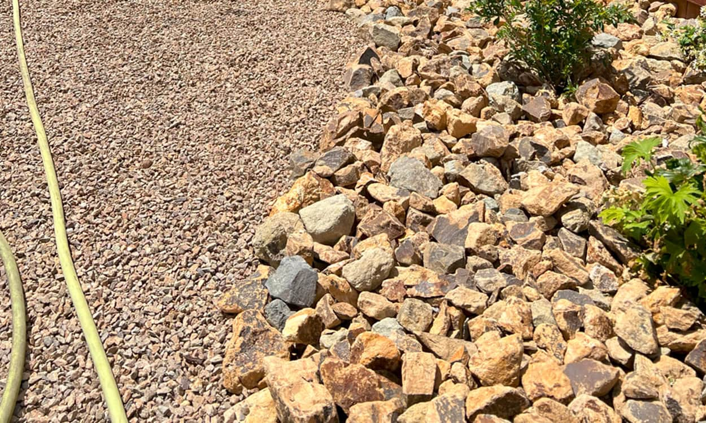
Landscaping Las Vegas
Desert-Savvy Landscape Design Trends Dominating Las Vegas Neighborhoods
Las Vegas homeowners are rapidly embracing new landscape design strategies that conserve water and celebrate the natural desert environment. As the region grapples with ongoing drought concerns, property owners find themselves seeking bold, sustainable solutions to beautify their yards without driving up utility costs.
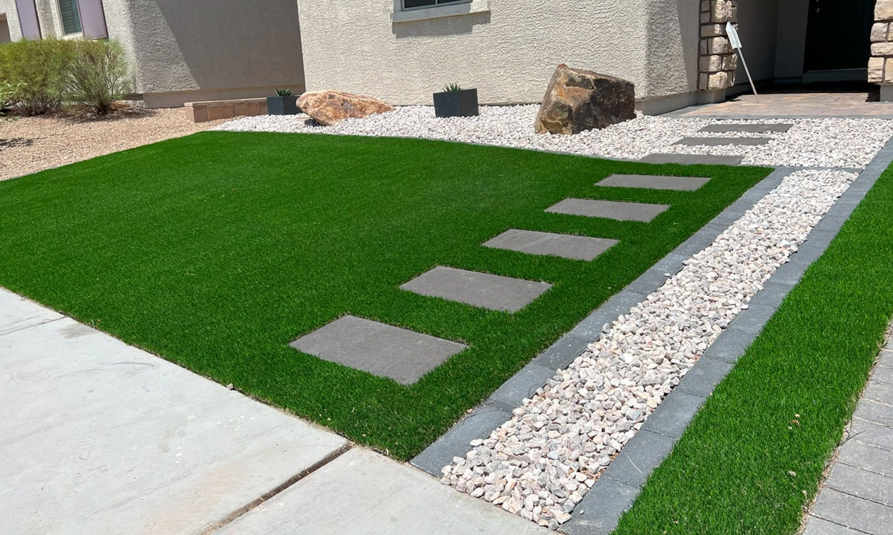
Landscaping Las Vegas
How Las Vegas Is Redefining Residential Landscaping with Xeriscape Innovations
Las Vegas is known for its glitz and glamour, yet it faces persistent drought conditions that challenge conventional landscaping methods. Today, local residents are increasingly adopting xeriscape principles—strategies that use minimal irrigation while showcasing drought-tolerant plants and desert-inspired layouts.
Landscaping Las Vegas
Local Experts Reveal Best Practices for Landscaping Las Vegas Homes on a Budget
Amid the rising cost of living and continued water restrictions, many Las Vegas homeowners wonder if upgrading their yards can be both affordable and ecologically sound. According to local landscaping experts, the answer is a resounding yes. With strategic plant selections, cost-effective hardscapes, and phased renovations, you can transform a bland property into a stylish, desert-friendly haven without emptying your wallet.
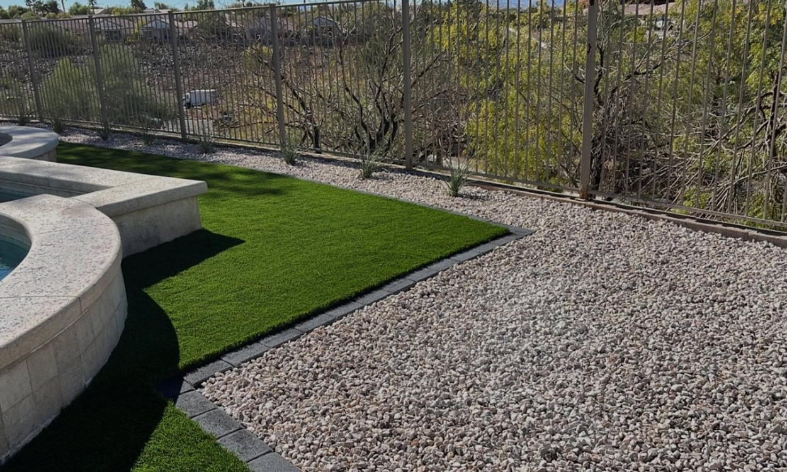
Landscaping Las Vegas
Commercial Properties Embrace Sustainable Landscaping Design Across Las Vegas
Las Vegas isn’t just about casinos and neon lights; it’s increasingly a showcase for forward-thinking commercial landscapes. From shopping centers to office parks, property managers are introducing sustainable landscape design principles that cut water use, enhance aesthetics, and lower maintenance costs. This shift reflects a growing consensus that green strategies aren’t optional—they’re vital for an enduring presence in the desert.
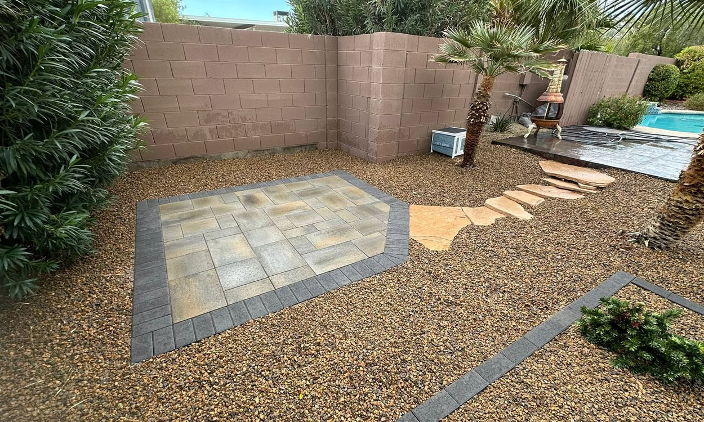
Landscaping Las Vegas
Outdoor Living Spaces Transform Las Vegas Landscaping Scene
In a city famed for big shows and bright lights, it’s easy to forget how appealing a private backyard can be. Yet Las Vegas homeowners increasingly focus on outdoor living, transforming conventional yards into multi-functional extensions of their homes. By blending creative landscaping design with amenities like open-air kitchens, cozy seating areas, and subtle lighting, these spaces rival any indoor entertainment room.
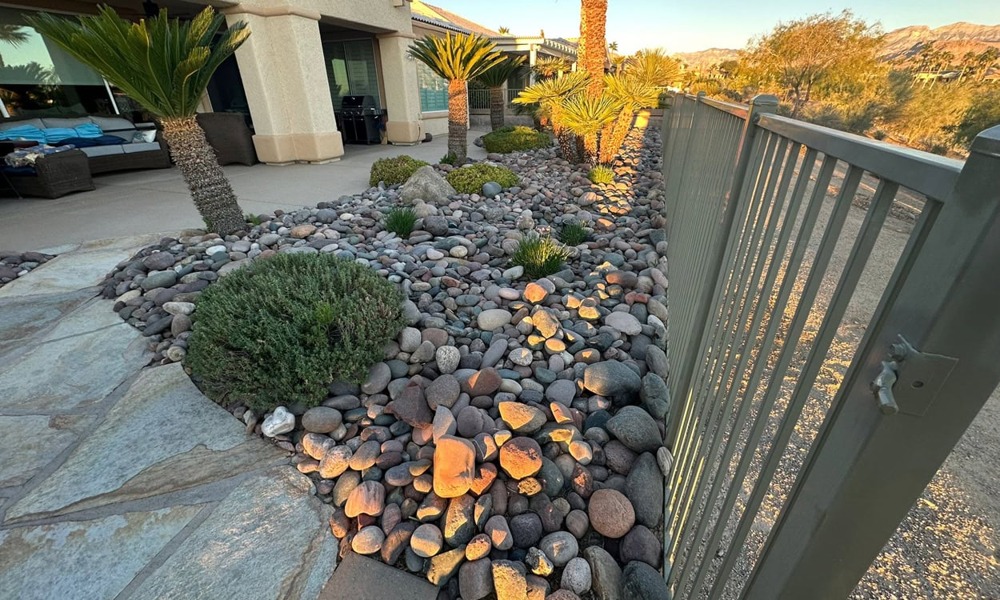
Landscaping Las Vegas
Landscaping Las Vegas: Curb Appeal Takes Center Stage in Desert Home Sales
Realtors across the Valley agree: a home’s exterior presentation can make or break a deal, especially in the competitive Las Vegas market. Potential buyers often judge properties in the first few seconds, so curb appeal has become a driving force behind major landscaping revamps. Sellers are discovering that investing in front-yard design—not just backyard entertainment areas—helps secure quicker sales and better offers.
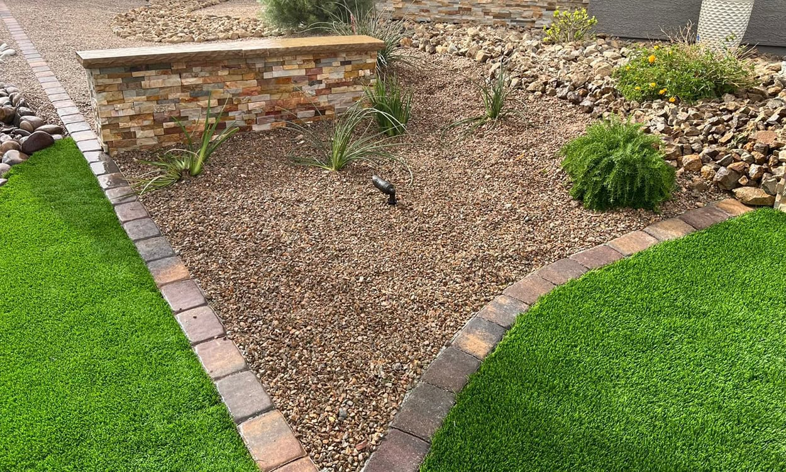
Landscaping Las Vegas
Community Gardens Flourish: New Green Spaces Sprout Across Las Vegas Neighborhoods
In a city famed for neon signs and bustling casinos, the emergence of community gardens signals a refreshing pivot towards healthier, greener living. For years, scorching summers and limited rainfall seemed to discourage collective growing, but recent landscaping innovations have made shared plots possible—and increasingly popular—throughout Las Vegas neighborhoods.
Landscaping Las Vegas
From Turf to Tech: Smart Irrigation Systems Revolutionize Landscaping in Las Vegas
As water restrictions tighten, Las Vegas homeowners and businesses alike seek ways to curb their outdoor water use. Enter the realm of smart irrigation, a technological leap that optimizes watering schedules by monitoring weather, soil moisture, and plant requirements in real time. By integrating these high-efficiency systems, property owners report lower water bills and healthier landscapes.
Landscaping Las Vegas
Las Vegas HOA Regulations Drive Creative Landscape Design Solutions
Homeowners Associations (HOAs) wield significant influence over how front yards and communal areas look, and in Las Vegas, many HOAs have adapted regulations to suit water conservation efforts. Although some residents find these rules restrictive, others see them as a spur for design creativity that complements the desert backdrop while meeting community standards.
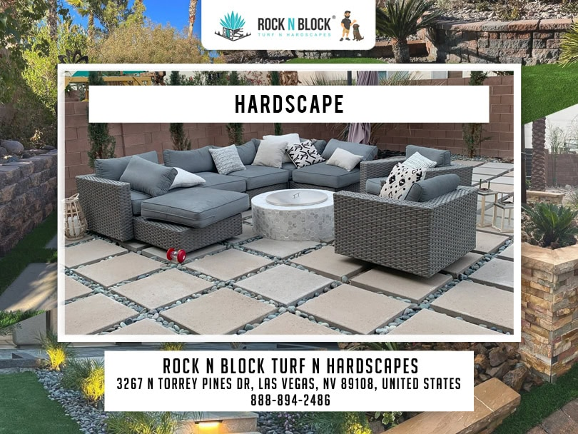
Landscaping Las Vegas
Backyard-to-Table: How Las Vegas Landscaping Fuels Homegrown Produce
In a city famed for entertainment and nightlife, a new trend is sprouting in residential neighborhoods: edible landscaping. Once considered a challenge in the desert climate, homeowners are finding creative ways to grow herbs, vegetables, and even fruit trees right in their backyards. With careful soil amendments and strategic watering practices, Las Vegans now cultivate produce that flourishes under the Mojave sun.
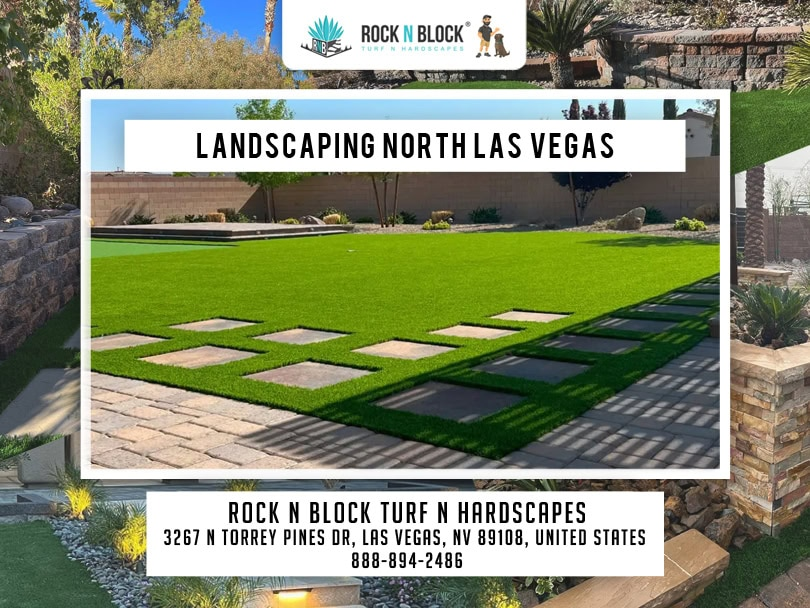
Landscaping Las Vegas
Landscape Design Meets Desert Art: Creative Installations Sweep Las Vegas
Las Vegas homeowners are reinventing landscape design by bringing art installations straight into their yards. From towering metal sculptures to subtle mosaic pathways, these creative ventures forge a unique synergy between the desert’s raw scenery and modern aesthetics. What was once a practical matter of water conservation now doubles as a personal artistic statement.
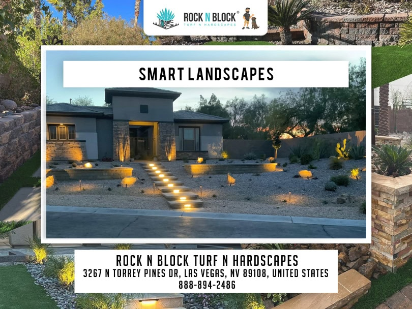
Landscaping Las Vegas
Las Vegas Families Reclaim Outdoor Time with Kid-Friendly Landscaping Ideas
With digital distractions dominating children’s schedules, many Las Vegas families turn to kid-friendly landscaping to encourage outdoor play. The city’s harsh sun and limited rain once posed challenges for child-safe yards, but contemporary solutions blend resilient plantings, protective shade, and safe surfaces that spark creativity for all ages.
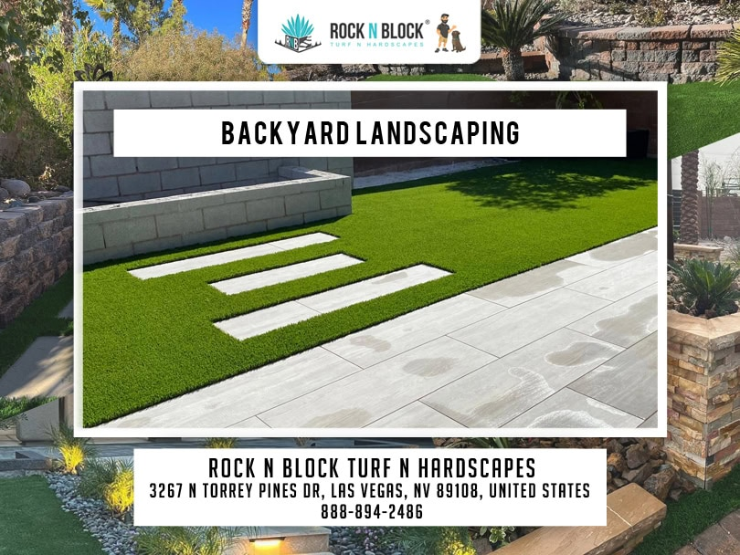
Landscaping Las Vegas
Drought Tactics 2.0: Las Vegas Ups the Game with Advanced Landscaping Workshops
Las Vegas has made strides in water conservation, but a series of advanced landscaping workshops now guides residents toward even bolder tactics. Organized by local horticulture experts, these sessions delve beyond the basics of xeriscaping—covering topics like soil biology, pollinator-friendly plant selections, and integrated pest management. For homeowners, the payoff lies in cost savings, ecological benefits, and striking yard designs.
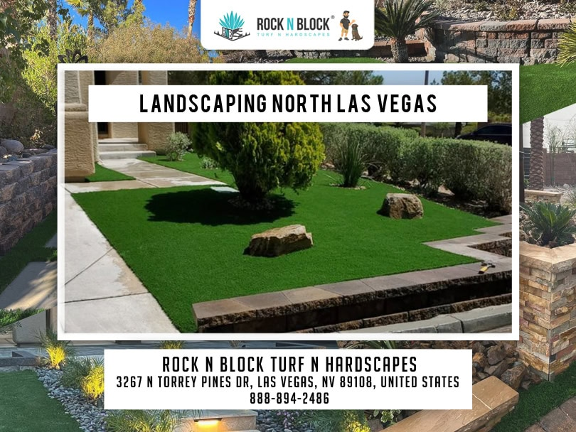
Landscaping Design
Landscaping Design for Las Vegas Pools: Cool Ideas in a Hot Climate
With triple-digit summers, Las Vegas residents often rely on swimming pools to stay cool. Yet designing the immediate surroundings can prove challenging amid intense heat and water conservation measures. Now, a fresh wave of landscaping design ideas helps pool owners achieve stylish, low-maintenance oases that withstand the Mojave’s extremes.
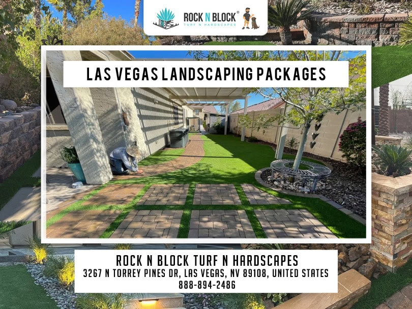
Landscaping Design
HOA-Approved Desert Color: Landscaping Las Vegas with Native Wildflowers
Strict homeowner association guidelines often discourage flashy, high-water lawns in Las Vegas. Yet an underappreciated alternative is native wildflowers—an approach that offers bursts of color without violating HOA water rules. Blending subtle pinks, blues, and yellows among desert shrubbery, these plants attract pollinators and enliven local communities, all while satisfying low-irrigation mandates.
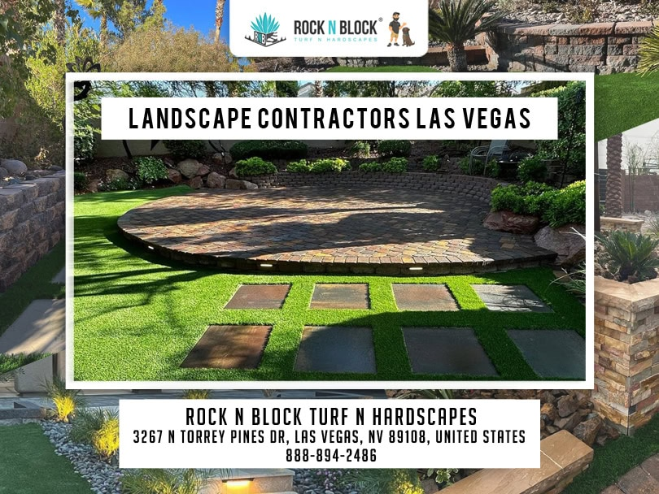
Landscaping Design
Top Landscaping Design Upgrades for Increasing Property Value in Las Vegas
For homeowners considering resale or simply wanting to boost equity, investing in landscaping design can yield substantial returns, especially in the competitive Las Vegas market. Real estate professionals consistently rank curb appeal improvements among top factors that influence sale prices. By focusing on smart, water-wise upgrades, property owners can strike a balance between cost-effectiveness and visual impact.
Landscaping Designer
Seniors Find Low-Maintenance Joy in Las Vegas Landscaping Designs
For many retirees settling in Las Vegas, the goal is to relish warm weather without burdening themselves with laborious yard chores. Luckily, modern landscaping design caters to those seeking minimal upkeep, water efficiency, and comfortable spaces to enjoy the outdoors. As a result, senior-friendly landscapes are popping up across age-restricted communities and single-family homes alike.
Landscaping Designer
Seasonal Changes: Landscaping Tips to Keep Las Vegas Yards Vibrant Year-Round
Though Las Vegas endures scorching summers and mild winters, subtle seasonal shifts affect landscaping design choices. Savvy homeowners tweak watering schedules, refresh mulch, and rotate plant palettes to ensure their yards remain striking no matter the time of year. By embracing these adjustments, they maximize both color and health across the seasons.
Landscaping Designer
New Suburban Developments Embrace Modern Landscaping Las Vegas-Style
The Las Vegas Valley continues expanding outward, with new suburban communities emerging in once-vacant desert parcels. Developers now recognize that in a region battling drought, traditional lawns and excessive watering won’t cut it. As a result, modern landscaping concepts drive these planned neighborhoods, ensuring curb appeal that aligns with the city’s natural environment.